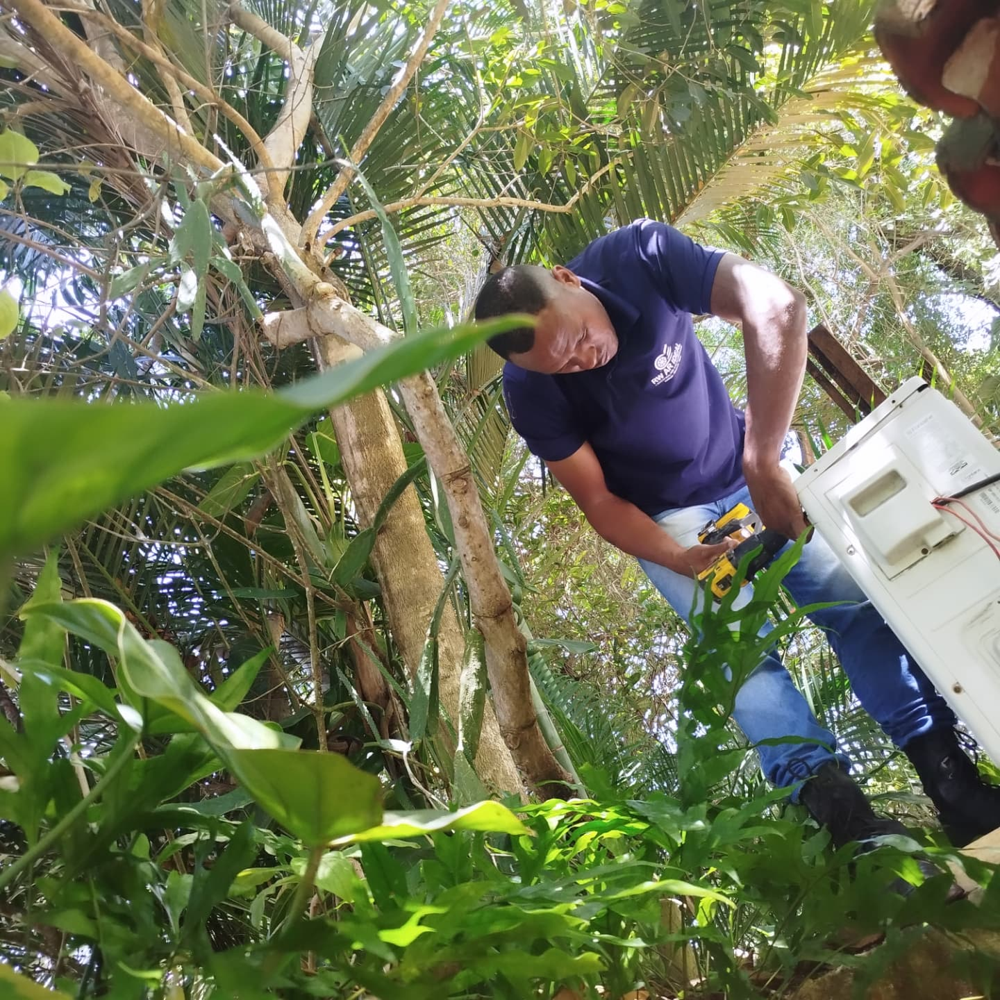

Instalação
Instalação de aparelhos split, com atenção ao local e às orientações do fabricante.
↗Salvador e região
Instalação, manutenção, reparo e higienização de ar-condicionado em Salvador e região. Atendimento para casas, empresas e instituições.

Instalação em campoA RW Ar Ideal
Há 14 anos, a RW Ar Ideal trabalha com climatização em Salvador e região. Da escolha do atendimento à execução, o foco é entender o ambiente e cuidar do equipamento.
Acompanhe a RW no InstagramO que fazemos
Para residência, comércio e instituições.
Instalação de aparelhos split, com atenção ao local e às orientações do fabricante.
↗Limpeza técnica das partes internas para cuidar do aparelho e do ar que circula.
↗Revisão preventiva e avaliação de falhas para recuperar o funcionamento do aparelho.
↗Diagnóstico e conserto de problemas no sistema de climatização.
↗Na prática
Registros publicados pela própria RW Ar Ideal. Conheça o serviço por trás de cada ambiente.
Primeiro passo
Envie seu bairro, o tipo de aparelho e, se possível, uma foto. A equipe conversa com você sobre o atendimento e o orçamento.
Falar com a RW Ar IdealPerguntas frequentes
Em Salvador, Camaçari e região. Informe seu bairro pelo WhatsApp para confirmar a disponibilidade.
Chame pelo WhatsApp e explique o serviço. Informe seu bairro, o tipo de aparelho e envie uma foto, se tiver.
Sim. A RW também publica instalações e manutenções em espaços comerciais e instituições.